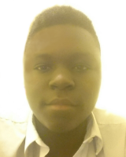

About Me - Sébastien Allen
I am a scientifically oriented student who is currently in year 11 at Fulham College Boys' School, I the creator of this website am also the CEO of the upstarting company Allen Industiries-Corporated (AIC) and all of its subsidiary companies (AllenChrology), all copyright terms are held by me and my extended family but I am not liable for any infringment or damage to propety caused as a result of this website or my company, such legal responsibility lies with my school/college.
Background Info
Born in the year 1998, I was always considered a fast learner, my brother who was no-more than a year older than me served as my inspiration and ensured that I was always one year ahead of my peers accademically. I studdied at St.Francis of Assisi Primary School between the years 2002 - 2008 and then transitioned to Henry Compton (soon to be FCBS) to continue my education. It was only around year 7 ( my first year in secondary school ) that I began to develop my interest for the sciences that defined me as a person. I am currently searching for a sixth-form to attend for years 12 and 13.